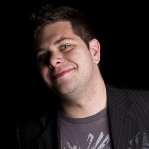

Speakers
Chronos Crypto
Chronos Crypto is a long-time Bitcoin enthusiast, with a degree in Computer Science and a passion for finance and macroeconomics. His perspective on the world financial system is that another catastrophe is increasingly inevitable, and Bitcoin needs to be ready. Over the past two years, he has operated a crypto-oriented YouTube channel, where he covers the finer points of blockchain technology.

Dr. Charles Evans
Dr. Evans is Associate Professor of Economics and Finance at Barry University in Miami, Florida, and Executive Director of Conscious Entrepreneurship Foundation, which promotes the use of Bitcoin and other fintech innovations among the 80+% of the world's population that is unbanked or underbanked. His academic research focuses on Bitcoin, including "Bitcoin in Islamic Banking and Finance" and "The Blind Economists and the Elephant: Bitcoin and Monetary Separation."
Dr. Evans has been teaching Economics and Finance since 2003, and has been involved with virtual currencies since the first wave of moneypunk projects during the 1990s Dot.Com Era. He is an Editor of Ledger, the peer-reviewed journal that focuses on cryptocurrency, and a member of the National Association of Forensic Economics (NAFE) and the Financial Education Association (FEA).
Jeff Garzik
Jeff Garzik is a futurist, entrepreneur and software engineer. Jeff is co-founder and CEO of Bloq. Jeff serves on the board of Coin Center, and the advisory board of BitFury, BitPay, Chain.com, Netki and WayPaver Labs. Jeff has delivered presentations on bitcoin and blockchain at TEDx, State of Digital Money, many bitcoin conferences, as well as private briefings to corporations, governments, central banks, and hedge funds.
Jeff has a long history of early technology adoption. After helping to inaugurate CNN.com on the Internet in the early 1990s, he worked for a succession of Internet startups and service providers. At the same time, he worked continuously on open source software engineering projects for over two decades.
Involvement in one of the best known open source projects - the Linux kernel - led to an extended tenure at Linux leader Red Hat during open source's most formative years. Jeff's work is found in every Android phone and data center Linux installation today.
In July 2010, Jeff stumbled across a post describing bitcoin. Immediately recognizing the potential of a concept previously thought impossible -- decentralized digital money, he did what came naturally: developed bitcoin open source software. That gave rise to the start of micro-businesses with bitcoin at their foundation. Almost by accident, Jeff found himself at the heart of the global, revolutionary, technology phenomenon known as bitcoin.
Bitcoin and blockchain served as a springboard for many new ideas and ventures, including sending objects into outer space.

Drew Hinkes
Drew represents leading companies & entrepreneurs in state and federal commercial litigation matters related to contract litigation, representation of court-appointed fiduciaries, business torts, bankruptcy adversary litigation, employment-related litigation, and electronic discovery. Drew also advises clients regarding document retention issues, management of electronically stored information, electronic records management strategies, and web site terms of service and privacy policies. Drew is frequently published and cited for his work in the virtual currency area, and is a noted authority in the areas of virtual currencies, smart contracts, distributed ledger-based technologies, computer data security/breaches, and technology regulation.
Dr. Bob McElrath
Bob's first career was as a theoretical physicist, and he wrote 30+ papers
on on Higgs bosons, dark matter, and black holes at particle colliders like the
Large Hadron Collider at CERN. That wasn't nearly interesting enough for him so
he took a left turn into remaking money with cryptography, and is now CTO and
Chief Scientist for SolidX Partners in New York. He's now working on building
an identity platform on blockchains and tutoring bankers about Bitcoin.
Bob is an editor for the Ledger Journal.
Dr. Peter Rizun
Peter R. Rizun is a physicist and entrepreneur living in Vancouver, Canada, and is co-founder and co-managing editor for Ledger. His main research interest is developing analytical theory that explains properties and emergent phenomenon of the Bitcoin Network. He has written two papers related to Bitcoin that received significant interest, “A Transaction Fee Market Exists Without A Block Size Limit” and “Reduce Orphaning Risk and Improve Zero Confirmation Security With Subchains”, and gave a talk on block space as an economic commodity at the Scaling Bitcoin conference in Montreal. He was the recipient of the $105,000 Natural Sciences and Engineering Research Council (NSERC) CGS Doctoral Award and was recognized as a “Leader of Tomorrow” by the Alberta Science and Technology Foundation (ASTech). He holds a B.A.Sc. degree in Engineering Physics from the University of British Columbia and a Ph.D. in Medical Physics from the University of Calgary.

Meni Rosenfeld
Meni Rosenfeld is a mathematics M.Sc. graduate of the Weizmann Institute of Science, specializing in machine learning. He has worked as the head of research of the internet startup Similarweb, where he was in charge of developing algorithms for measuring connections between websites and analyzing web traffic.
After being exposed to Bitcoin in March 2011, he has focused exclusively on activity in this field. He has established the Bitcoin community in Israel, founded Bitcoil - Israel's first Bitcoin exchange service, and performed mathematical research on the algorithms that underlie the functioning of the Bitcoin and blockchain system.
He now serves as the chairman of the Israeli Bitcoin Association.

Riccardo Spagni
Riccardo is a member of the Monero Core Development Team. With an academic background in informatics and logistics, Riccardo spent years in software development and the import/export industry. Due to the success of the business he started with his wife, he had enough freedom to start tinkering with Bitcoin in 2011. In 2012 he became involved in various cryptocurrency-related projects.
Riccardo and his wife live along the Garden Route on the coast of South Africa, where he spends weekends pack rafting, hanging out with their six dogs, building and flying multicopters, playing with LEGO, and collecting watches.
Andrew Stone
Andrew Stone is the developer of Bitcoin Unlimited, has been an investor in Bitcoin since early 2012 and is currently the Software Architect at OpenClovis, Inc, a company that provides clustering and high availability software to telecom, aerospace and defense equipment manufacturers.
Andrea Suisani
A software developer for almost twenty years, recently transitioned to what they use to call a full-stack software developer. That means doing 4 jobs while being payed only for one. On the bright side such a role gives opportunity to improve skills through a lot of IT fields like database system administration, system administration, coding and project management.
Holding a Bachelor degree in statistics, and getting into Bitcoin in 2011, Andrea briefly pool mined with a Radeon GPU, and hasn't looked back since.
Tom Zander
Tom is a software guru, open source fan and developer.
Tom has more than 20 years professional programming experience in a range of
languages.
Toms experience has been varied, but focus is on C++ & Linux. Since
1998 Tom has been involved in various open source projects. His first big
application that was released was part of KDE in 2000.
Tom is involved with Bitcoin since 2013 and has worked in financial companies
in order to learn more about economics, money and fin-tech.